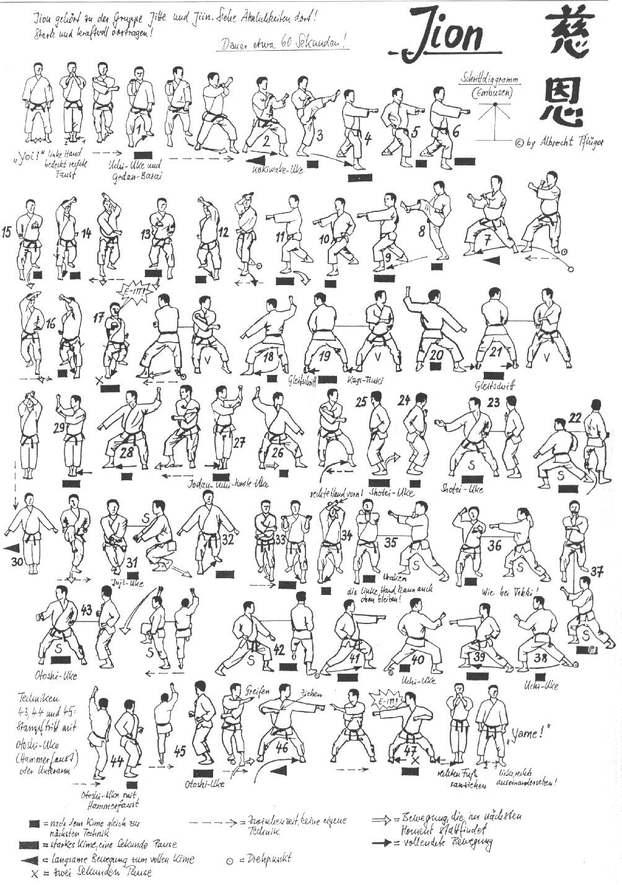

Jion

- Yoi andando in Eisoku Dachi con le ginocchia leggermente piegate braccia piegate, pugni all'altezza del mento, il palmo sinistro contiene il pugno destro e il pollice sinistro copre il cavo della destra.
- Arretro con la gamba sinistra e vado in Zenkutsu Dachi destro, eseguo contemporaneamente Gedan Barai sinistro e Uchi Uke destro.
- Avanzo a 45° in Zenkutsu Dachi, eseguendo Kakiwake Uke.
- Eseguo Mae Geri destro poi Sanbon Tzuki tutti Chudan.
- Mi sposto di 90° verso destra in Zenkutsu Dachi, eseguendo Kakiwake Uke.
- Eseguo Mae Geri destro poi Sanbon Tzuki tutti Chudan.
- Ruoto il busto verso sinistra di 45° ed eseguo Age Uke destro mano aperta, assesto la posizione spostando la gamba destra ed eseguo Age Uke sinistro e Gyaku Tzuki destro.
- Tenendo ferma la posizione eseguo Age Uke sinistro mano aperta, avanzo ed eseguo Age Uke destro e Gyaku Tzuki sinistro.
- Avanzo Age Uke sinistro.
- Avanzo Oi Tzuki destro. Kiai.
- Ruoto di schiena di 90° scendo in Kokutzu Dachi sinistro ed eseguo contemporaneamente Jodan Uchi Uke destro Gedan Barai sinistro.
- Piccolo spostamento verso sinistra andando in Kiba Dachi ed eseguo Yama Tzuki sinistro.
- Faccio perno sui talloni e ruoto di 180° in Kokutzu Dachi ed eseguo contemporaneamente Jodan Uchi Uke sinistro Gedan Barai destro.
- Piccolo spostamento verso destra ed eseguo Yama Tzuki destro in Kiba Dachi.
- Sposto la gamba sinistra in avanti in Zenkutsu Dachi ed eseguo Gedan Barai sinistro.
- Avanzando in Kiba Dachi eseguo tre Teisho Uchi.
- Ruoto di schiena di 90° scendo in Kokutzu Dachi sinistro ed eseguo contemporaneamente Jodan Uchi Uke destro Gedan Barai sinistro.
- Carico al fianco destro ed eseguo richiamando la gamba destra in Eisoku Dachi Jodan Morote Uke sinistro.
- Mawatte scandendo il Migi Kokutsu Dachi Uchi Uke destro ed eseguo contemporaneamente Jodan Uchi Uke sinistro Gedan Barai destro.
- Carico al fianco sinistro ed eseguo richiamando la gamba sinistra in Eisoku Dachi Jodan Morote Uke destro.
- Incrociando frontalmente eseguo Ren Yoko Gedan Barai.
- Richiamo i pugni ai fianchi eseguo Hittsui Geri destro e mi proietto in avanti eseguendo Gedan Juji Uke in Migi Kosa Dachi.
- Arretro con la gamba sinistra vado in Zenkutsu Dachi ed eseguo Ren Yoko Gedan Barai.
- Avanzo di un passo ed eseguo Jodan Juji Uke tenendo il destro avanti.
- Eseguo Uraken Uchi destro Age Uke sinistro.
- Tesa Uke sinistro e carico ruotando il braccio Age Morote Tzuki destro. Kiai.
- Ruoto di schiena di 90° ed eseguo in Zenkutsu Dachi Uchi Uke sinistro.
- Avanzo con Oi Tzuki destro.
- Mawatte in Zenkutsu Dachi e Uchi Uke destro.
- Avanzo con Oi Tzuki sinistro.
- Sposto la gamba sinistra di 90° ed eseguo Gedan Barai sinistro.
- Avanzo eseguendo tre volte Mikazuki Geri Chudan Otoshi Uchi.
- Richiamo la gamba sinistra in Eisoku Dachi ginocchia flesse in postero-rotazione di 90° e paro con la mano destra aperta verticale vicino alla guancia sinistra.
- Afferro ed eseguo Hidari Yoko Tzuki in Kiba Dachi.
- Richiamo la gamba sinistra e paro con la mano sinistra aperta verticale vicino alla guancia destra.
- Afferro ed eseguo Migi Yoko Tzuki in Kiba Dachi. Kiai.
- Richiamo la gamba destra e ritorno nella posizione iniziale.
- Yame! Allargo la gamba destra e torno in posizione di Yoi!